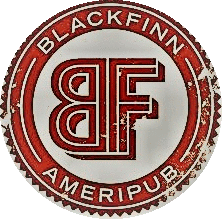

Home
Food
Drinks
Gallery
Upcoming Events
Private Parties
Our Drinks
WEEKLY SPECIALS
MONDAY
$5 Mules
$4 Green Tea Shots
TUESDAY
$6 House Margaritas
WEDNESDAY
Half Price All Glasses and Bottles of Wine
$5 Fireball
$5 Jack Daniels
THURSDAY
$6 Glasses of Rosé
$5 Bacardi Bombs
FRIDAY
$2.5 Bud Light Bottles
$3 Bud Light Orange
$4 Well Drinks
$6 Tito's Vodka
SUNDAYS
$4 Mimosas
BEER
DRAFTS
Appalachian Mountain Brewing Blonde Ale
Boone, NC
Lenny Boy Brewing Seasonal
Charlotte, NC
Bold Missy Solo Flight Brown Ale
Charlotte, NC
New Belgium Citradelic Tangerine IPA
Asheville, NC
Sugar Creek Pale Ale
Charlotte, NC
Legion Brewing Juicy J East Coast IPA
Charlotte, NC
Wicked Weed Brewing Pernicious IPA
Asheville, NC
Birdsong Jalapeno Pale Ale
Charlotte, NC
Coors Light
Golden, CO
Miller Lite
Milwaukee, WI
Bud Light
Saint Louis, MO
Stella Artois
Leuven, BE
Yuengling
Pottsville, PA
Sam Adams Boston Lager
Jamaica Plain, MA
Blue Moon
Golden, CO
Guinness
Dublin, IE
Sam Adams Seasonal
Jamaica Plain, MA
Angry Orchard (GF)
Walden, NY
BOTTLES & CANS
Lenny Boy Tropicalus White IPA
Charlotte, NC
Foothills People's Porter
Winston-Salem, NC
Foothills Torch Pilsner
Winston-Salem, NC
Triple C Baby Maker Double IPA
Charlotte, NC
Catawba Brewing Peanut Butter Jelly Time Brown Ale
Charlotte, NC
Mother Earth Sisters of the Moon American IPA
Kinston, NC
Mother Earth Weeping Willow Wit
Kinston, NC
Birdsong Brewery Lazy Bird Brown Ale
Charlotte, NC
Sierra Nevada Pale Ale
Mills River, NC
Duck Rabbit Amber Ale
Farmville, NC
Duck Rabbit Milk Stout
Farmville, NC
Highland AVL IPA
Asheville, NC
Bud Light
Saint Louis, MO
Budweiser
Saint Louis, MO
Coors Light
Golden, CO
Corona
Mexico City, MX
Corona Light
Mexico City, MX
Dale's Pale Ale
Lyons, CO
Heineken
Zoeterwoude, NL
Michelob Ultra
Saint Louis, MO
Miller Lite
Milwaukee, WI
Blake's El Chavo Habanero & Mango Cider
Armada, MI
O'Doul's (Non-Alcoholic)
Saint Louis, MO
WINE
BUBBLES & WHITES
William Wycliff Brut
California
7 | 26
La Marca Prosecco
Italy
9 | 34
Sutter Home White Zinfandel
California
7 | 26
Longbride "The Emily" Rose
South Africa
7 | 26
Maso Canali Pinot Grigio
Trentino
10 | 38
Canyon Road Pinot Grigio
California
7 | 26
Charles & Charles Riesling
Washington
9 | 34
Seaglass Sauvignon Blanc
Santa Barbara County
9 | 34
Starborough Sauvignon Blanc
Marlborough
10 | 38
Twelfth Night Sauvignon Blanc
Marlborough
10 | 38
William Hill Chardonnay
Central Coast
9 | 34
Marlo Chardonnay
California
8 | 30
Joel Gott Unoaked Chardonnay
California
11 | 42
Stronecross Chenin Blanc
South Africa
9 | 34
Kendall-Jackson Chardonnay
California
12 | 46
REDS
Canyon Road Pinot Noir
California
7 | 26
Jargon Pinot Noir
California
9 | 34
Bridlewood Pinot Noir
Monterey County
8 | 30
La Crema Pinot Noir
Sonoma Coast
14 | 54
Terrapura Pinot Noir
Chile
8 | 30
Gascon Malbec
Argentina
9 | 34
Apothic Red Blend
California
8 | 30
Charles & Charles Red Blend
Washington
8 | 30
Sycamore Lane Cabernet Sauvignon
California
8 | --
337 Cabernet Sauvignon
Lodi
9 | 34
Allston Cabernet Sauvignon
California
10 | 38
Rainbow's End Cabernet Sauvignon
South Africa
10 | 38
Louis M. Martini Cabernet Sauvignon
California
10 | 38
Joel Gott 815 Cabernet Sauvignon
California
13 | 50
SPECIALTY COCKTAILS
BOURBON SMASH
maker’s mark, simple syrup, lemon wedge, fresh mint leaves on the rocks
10
UPTOWN TINI
pinnacle vodka, peach schnapps, cranberry juice, pineapple juice, shaken, up
9
CUCUMBER COOLER
hendricks gin, st-germain, cucumber infused simple syrup, cucumber slices, lemon, splash of sprite, shaken
10
CUCUMBER CHILLI MARGARITA
sauza cucumber chilli tequila, fresh lime juice, sour mix on the rocks
9
BLACKFINN ICED TEA
house-made sweet tea, freshly squeezed lemonade, social house vodka
9
GREYHOUND
deep eddy’s ruby red grapefruit, freshly squeezed grapefruit juice
9
BLACKFINN MARGARITA
el jimador tequila, triple sec, lime juice, cane sugar, shaken, on the rocks, salt or no salt
9
LEMON DROP
grey goose le citron vodka, cointreau, freshly squeezed lemonade, shaken, up
9
STRAWBERRY BASIL LEMONADE
muddled strawberries and fresh basil leaves, aviation gin, st-germain, freshly squeezed lemonade, shaken, topped with sprite
9
LEMON BERRY COOLER
new amsterdam berry vodka, freshly squeezed lemonade, mint leaves, sprite, shaken
9
MANGO GINGER MOJITO
bacardi mango rum, ginger beer, cubed mango, fresh mint leaves, shaken
9
PEACH CABERNET SANGRIA
cabernet sauvgnon. peach schnapps, orange, cranberry, pineapple, lemon, lime and sprite
9
WHITE CRAN SANGRIA
pinot grigio, apricot brandy, peach schnapps, white cranberry juice, lemonade, lemon, lime, sprite
9
PICKLE VODKA BLOODY MARY
seven jars pickle vodka and zing zang bloody mary mix
9
ORANGE YOU GRAPEFUL OLD FASHIONED
redemption rye whiskey, grapefruit bitters, muddled orange, cherry, splash orange
10
UPTOWN MULE
tito’s vodka, ginger beer, lime juice
9